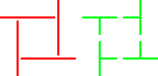
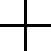
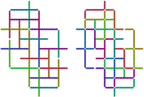
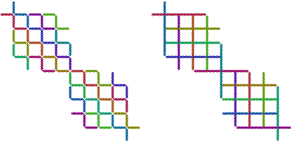
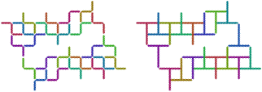
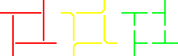
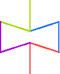

| |||||
|---|---|---|---|---|---|
| crossing: no crossing: | crossing: no crossing: | ||||
| crossing: no crossing: |
A do n-line is a connected union of n unit line segments that intersect only at their endpoints, and form angles that are multiples of do. For two given polylines, what is the smallest figure that can be tiled individually by them? For a given subset of n-lines, what is the smallest figure that can be tiled by those n-lines but no other? And for a given polyline, what is the smallest figure that can be tiled by it in multiple ways? For all of these questions, the answer may depend on whether we allow crossings or not.
Here are the best known compatibilities:
| crossing: no crossing: | ||
|
| |||||
|---|---|---|---|---|---|
| crossing: no crossing: | crossing: no crossing: | ||||
| crossing: no crossing: |
|
| |||||
|---|---|---|---|---|---|
|
| crossing:
no crossing: |  | crossing: no crossing: | crossing:
no crossing: | |

| |||||
(George Sicherman) |
|  | ||||||||||||||||
|---|---|---|---|---|---|---|---|---|---|---|---|---|---|---|---|---|
| 1 | 2 / 4 | 4 | 2 / 4 | 1 | 2 / 4 | 2 | 2 | 2 | 2 | 1 | 1 / ∞ | 2 / 4 | ∞ | 4 / ∞ | 2 / ∞ | |
| 4 / ∞ | 2 / 4 | 2 / 4 | 2 / 4 | 2 | 2 | 1 | 1 | 1 | 1 | 2 | 1 | 2 | 1 | 1 | 1 |
|
| 3 | 3 | 3 / 12 | 6 / ∞ | 6 / ∞ | 6 / ∞ | 6 / ∞ | 12 / ∞ | 18 / ∞ | 6 | 9 | 9 / ∞ | 6 | ∞ | 12 / ∞ | 6 / ∞
|
| 3 / 6 | 3 | 3 | 3 | 3 | 3 | 3 | 3
| 3 | 3 | 3 | 3 / 12 | 3 / 12 | 3 / ∞ | 3 / 6 | 3
|
| 6 / ∞ | 6 | 3 | 3 / 6 | 6 / ∞ | 6 | 3 | 6
| 6 | 3 | 3 | 3 | 3 | ∞ | 6 | 3
|
| 12 / ∞ | 3 / ∞ | 6 | 6 | 9 / ∞ | 3 | 3 | 6
| 6 / 12 | 6 | 6 / ∞ | ∞ | 3 | 3 | 3 | 3
|
| 18 / ∞ | 6 / 24 | 6 | 3 | 6 / ∞ | 6 | 3 | 3 / 6
| 3 | 3 | 9 / 18 | 3 | 3 | 3 | 3 | 3
| |
|---|
Here are the pictures of the largest compatibilities:
|  |  |  |

|
| ∞ | 2 / 4 | 4 | 6 / ? | 2 / 4 | 4 / ∞ | 8 / ∞ | 4 / ∞ | 16 / ∞ | 8 / ∞ | 4 | 4 / ∞ | 8 / ? | ∞ | 32 / ? | 8 / ∞
|
| 2 | 2 | 2 | 4 | 2 | 4 | 2 / 4
| 2 / 4 | 4 | 4 | 4 / ∞ | 2 | 4 / ∞ | 4 / ? | 4 / ?
|
| 2 | 2 | 4 | 4 | 2 / 4 | 4
| 4 | 2 / 4 | 4 | 4 | 2 | ∞ | 8 | 4 / 12
|
| 2 / 4 | 2 / 4 | 2 | 4 | 4
| 4 | 2 / 4 | 4 | 2 / ? | 2 | ∞ | 2 / 4 | 2 / 4
|
| 2 | 2 / 4 | 2 | 2
| 2 | 2 / ? | 2 | 2 / ∞ | 4 / ? | ∞ | 4 / ? | 2 / ∞
|
| 2 | 4 | 4
| 2 / 4 | 4 | 4 | 8 / ? | 4 | 2 / 4 | 2 / 4 | 2 / 4
|
| 2 | 2
| 2 | 2 | 2 | ∞ | 2 | ∞ | 2 | 2
|
| 2
| 2 | 4 | 6 | 4 | 4 | 8 / ? | 2 | 4
|
|
| 4 / ∞ | 2 | 2 | ∞ | 4 / 8 | 2 / ? | 2 / 4 | 2
|
|
| 2 | 2 | 2 | 4 | 4 | 2 | 2
|
|
| 2 | ∞ | 2 / 4 | ∞ | 8 / ? | 12 / ?
|
|
| ∞ | 4 | ∞ | 4 | 2
|
|
| 2 | 4 | 4 | 2
|
|
| ∞ | 2 | 2
|
|
| 2 | 2
|
|
| 4
| |
Here is a picture of the largest compatibility:
George Sicherman found many multiple tiling numbers of the 90o pentalines:
| I L crossing: no crossing: | I T crossing: no crossing: | L S crossing: no crossing: |
| L U
| L T crossing: no crossing: | T U crossing: no crossing: | T S |
| U S
| I U crossing: no crossing: | I S crossing: no crossing: |
| I L T  | I L U crossing: no crossing: | L T S
|
| I L S crossing: no crossing: | I T S crossing: no crossing: | I T U crossing: no crossing: | I U S crossing: no crossing: | L T U crossing: no crossing: |
| L U S crossing: no crossing: | T U S
|
| I L T U crossing: no crossing: | L T U S crossing: no crossing: |
| I L T S crossing: no crossing: | I T U S crossing: no crossing: |
| I L U S crossing: no crossing: |
| I L T U S crossing: no crossing: |
| crossing: no crossing: | crossing: no crossing: | ||

| ||||||||||||
|---|---|---|---|---|---|---|---|---|---|---|---|---|
| 4 / ? | 4 / 8 | 2 | 4 | 4 / 24 | 2 / 8 | 2 | 4 / 8 | 2 | 4 / ? | 2 / ? | 2 | |
| 4 / 6 | 2 | 2 / 4 | 2 | 2 | 2 | 2 | 2 | 2 | 2 | 2 | 4 / ? | |
| 2 | 2 | 2 | 2 | 2 | 2 | 2 | 2 / 4 | 2 / 6 | 2 | 2 / 6 | 4 / 18 |
|
| ||||||||||||
|---|---|---|---|---|---|---|---|---|---|---|---|---|
|
| ∞ | 2 / 3 | 2 / 4 | 2 | 3 | ∞ | 3 | 3 / ∞ | 4 / ∞ | 6 / ∞ | ∞ | 6 / ∞ |
| 3 | 2 | 2 / 3 | 2 | 3 | 3 | 2 / 3 | 2 | 2 | 3 | 4 | ||
| 2 / 3 | 2 / 3 | 2 / 3 | 3 | 2 | 6 / 24 | 2 / 3 | 3 / ? | 9 / ? | 2 / 3 | |||
| 2 | 2 / 3 | 2 | 3 | 2 | 2 / 3 | 2 / 3 | 2 | 6 / ? | ||||
| 3 | 4 | 2 | 6 / ? | 4 / ? | 3 | ∞ | 6 / ? | |||||
| 2 | 2 / 3 | 2 | 3 | 3 / 6 | 2 / ∞ | 18 / ? | ||||||
| 2 / 3 | 3 | 2 | 2 | 2 / 3 | 3 | |||||||
| 2 | 2 / 3 | 4 | ∞ | 3 / ? | ||||||||
| 3 | 2 | 3 / 6 | 2 / 3 | |||||||||
| 3 | 3 | 6 / ? | ||||||||||
| ∞ | 9 / ∞ | |||||||||||
| ∞ |
George Sicherman found many multiple tiling numbers of the 60o tetralines:
| I L
| I V
| L V
| I L V crossing: no crossing: |
| crossing: no crossing: | ||
|  |
George Sicherman found many compatibilities of the 72o bilines and trilines:
George Sicherman found many compatibilities of the 72o trilines, both with crosses and without:
George Sicherman found many multiple tiling numbers of the 72o trilines:
George Sicherman also found many compatibilities of the 51o bilines:
George Sicherman also found multiple tiling numbers of the 51o bilines and trilines:
If you can extend any of these results, please
e-mail me.
Click here to go back to Math Magic. Last updated 5/11/07.